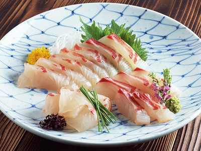
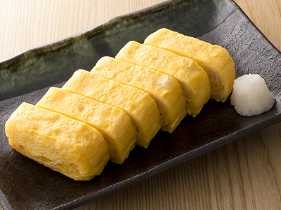
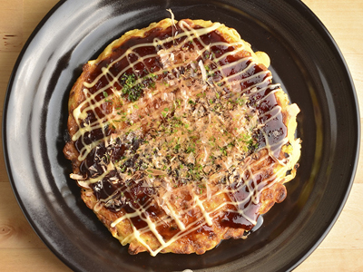

Images

Sushi is a traditional Japanese dish of prepared vinegared rice.

Udon noodles is a thick noodle made from wheat flour, used in Japanese cuisine.

Tofu is curd made from mashed soybeans, used chiefly in Asian and vegetarian cooking.

Tempura is a Japanese dish of fish, shellfish, or vegetables, fried in batter.

Yakitori is a Japanese dish of chicken pieces grilled on a skewer.

Sashimi is a Japanese dish of bite-sized pieces of raw fish eaten with soy sauce and wasabi paste.

Ramen is a Japanese noodle soup.

Oden is a type of boiled food in Japan. by bringing a variety of raw materials to boil.

Tamagoyaki is a type of Japanese omelette.

Soba is a thin Japanese noodle made from buckwheat.

Sukiyaki is a Japanese dish of sliced meat, especially beef, fried rapidly with vegetables and sauce.
Japanese curry is commonly served in three main forms: curry rice.
Japanese cuisine encompasses the regional and traditional foods of Japan, which have developed through centuries of political, economic, and social changes. The traditional cuisine of Japan is based on rice with miso soup and other dishes; there is an emphasis on seasonal ingredients.
More pictures
Miso Soup

Takoyaki
Nikujaga
Chawanmushi
Wagashi
Onigiri

Okonomiyaki
Shabu Shabu

Gyoza
Edamame
❤❤❤